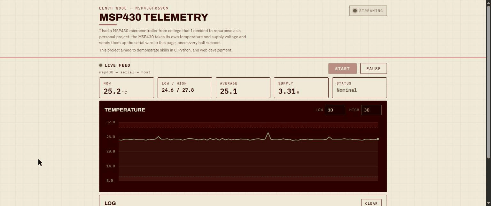

MSP430 Telemetry Dashboard
An MSP430 reads its own temperature and supply voltage and streams them over serial. A small Python service relays the data, and this dashboard charts it live in the browser.

What it does
C firmware on an MSP430FR6989 samples the internal temperature sensor and the chip's supply voltage, shows the temperature on the on-board LCD, and streams the readings over UART. A Python host checks each frame's checksum, stores it in SQLite, and pushes it to the browser over a WebSocket. The dashboard charts the live stream with a hand-drawn Canvas chart, stat tiles, and an alarm log, all without a charting library.
The tricky part
Keeping it solid when things go wrong: the host drops any corrupt or partial frame instead of crashing, and crossing a threshold trips an alarm the log records. The alarm logic and frame parser are covered by unit, end-to-end, and accessibility tests in CI.
Next
Push calibration back to the device, add a light sensor, and replay history from the SQLite store.